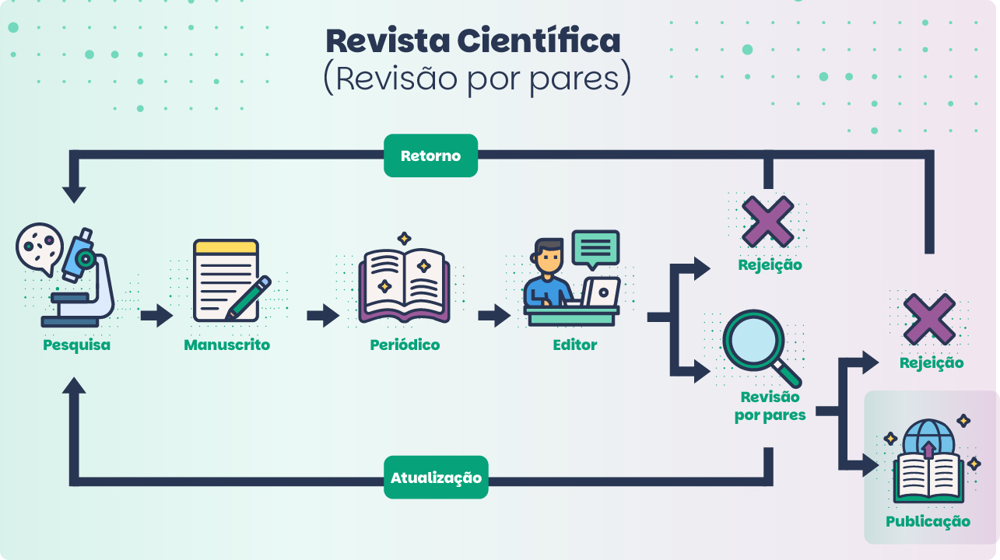
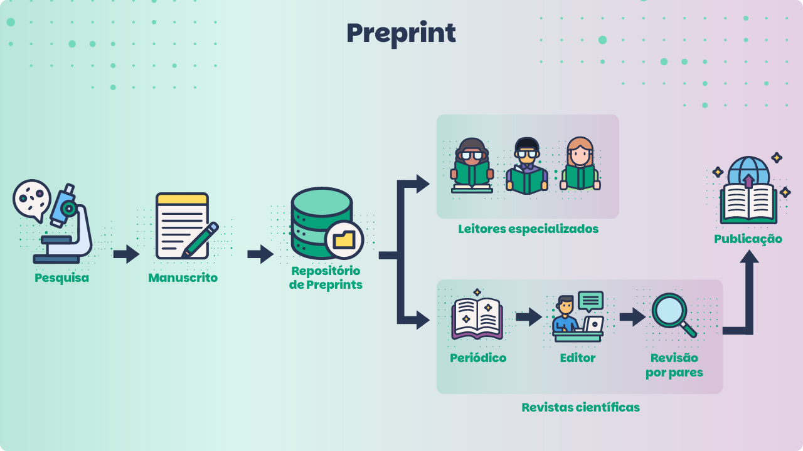

Módulo 3 . Aula 4 Preprints
 Objetivos da
aula
Objetivos da
aula
Nesta aula, você conhecerá os preprints, versões preliminares de artigos científicos disponibilizadas antes da revisão por pares formal. Eles são amplamente usados para acelerar a comunicação científica, especialmente em áreas como Física e Biologia. Ao final da aula, você será capaz de:
- Compreender o conceito de preprints e identificar sua contribuição para a comunicação científica.
- Diferenciar a revisão por pares, geralmente anônima, adotada pelas revistas científicas da revisão aberta por pares adotada como padrão nas plataformas de preprints.
- Conhecer os principais benefícios, desafios e implicações éticas do uso de preprints na comunicação científica.
- Conhecer as especificidades das principais plataformas de preprints, incluindo aquelas mantidas por financiadores privados de pesquisa.
- Conhecer um exemplo de ferramenta que busca aprimorar o processo de revisão por pares aberta realizada nas plataformas de preprints.
O que são preprints
Preprints são manuscritos científicos disponibilizados de maneira aberta em plataformas (de preprints) antes da revisão por pares. Esse formato permite que pesquisadores compartilhem suas descobertas rapidamente, promovendo disseminação ágil do conhecimento sem ter que esperar pelos longos processos de revisão e de publicação das revistas científicas.
Como inovação na comunicação científica, é comum que os preprints sejam utilizados pelos pesquisadores como “vitrines” de suas pesquisas, cujos resultados pretendem submeter posteriormente a revistas científicas de excelência. Nessa perspectiva, eles são uma espécie de "prévia" e podem ser melhorados a partir dos comentários e correções sugeridas por leitores que, geralmente, também são especialistas na área. A ideia é que, no futuro, uma nova versão, aprimorada, seja submetida para uma revista.
Exemplo
Na física, o preprint é um formato consolidado e considerado uma publicação em si, sem grandes expectativas de gerar uma versão para submissão para revistas. Esse campo científico prioriza a rapidez da comunicação.
Origem dos preprints
Os preprints têm suas origens na comunidade científica da Física e surgiram como uma forma de compartilhar descobertas antes da publicação formal em revistas científicas. O uso de preprints ganhou força especialmente nas décadas de 1960 e 1970, quando pesquisadores da área de Física de Altas Energias começaram a circular cópias de seus manuscritos não revisados por pares entre outros cientistas interessados. Essa prática informal permitia a rápida disseminação de novos resultados e promovia o debate científico antes que os artigos fossem aceitos por periódicos.
No início dos anos 1990, a troca de manuscritos foi formalizada com o lançamento do arXiv.org por Paul Ginsparg.
O repositório digital atlix foi criado por Paul Ginspatg no início dos anos 1990, inicialmente para os físicos teóricos. Revolucionou o acesso à pesquisa científica ao permitir que manuscritos fossem disponibilizados online de forma aberta e gratuita. Isso não só acelerou a comunicação científica, como também estabeleceu uma nova cultura de compartilhamento de conhecimento em outras áreas, como a Matemática, a Ciência da Computação e, eventualmente, a Biologia e as Ciências Sociais.
Outras iniciativas de preprints em diferentes áreas são o bioRxiv, o SocArXiv e o OSF Preprints (multidisciplinar).
Relação entre preprints e o Acesso Aberto
Atualmente, os preprints já são populares em diversas áreas, especialmente em ciências exatas e biológicas, e estão se tornando cada vez mais importantes para a comunicação científica global.
Ao utilizar plataformas de preprints, os pesquisadores podem disponibilizar seus trabalhos gratuitamente, permitindo acesso imediato ao conteúdo sem os custos associados à publicação em revistas que cobram taxas de publicação.
Os preprints oferecem uma alternativa para pesquisadores que desejam compartilhar seus resultados de forma aberta, sem depender do modelo de pagamento por publicação adotado pelas editoras comerciais na chamada via dourada do Acesso Aberto.
Além disso, o uso de preprints promove uma cultura de ciência aberta e fomenta a colaboração aberta ao adotar a avaliação por pares aberta, assunto estudado na aula anterior deste curso.
“What are preprint?”
Diferença entre preprints e artigos publicados em revistas
As principais diferenças entre preprints e artigos publicados em revistas científicas estão na maneira como os manuscritos são revisados e na velocidade com que são publicados.
Um manuscrito é revisado pelo editor do periódico e, por pelo menos, dois revisores, cujas identidades não são de conhecimento do autor (revisão por duplo cego). Esse processo pode levar meses (até anos) com muitas idas e vindas de solicitações de complementação e respostas dos autores até a sua publicação.
Os manuscritos são disponibilizados diretamente pelos autores em servidores de preprints, geralmente em poucos dias, sem passar pela revisão por pares tradicional. Dependendo da plataforma, pode haver uma verificação básica para garantir conformidade com as diretrizes do repositório, mas não há um processo editorial formal como nas revistas científicas. Em alguns casos, os autores podem indicar o link do preprint ao submeterem o artigo a uma revista científica, permitindo que o manuscrito receba comentários da comunidade antes da avaliação formal.
Além de acelerar a disseminação do conhecimento, essas plataformas funcionam como espaços de troca entre especialistas e outros interessados na temática, que acessam os preprints para acompanhar avanços científicos, contribuir com discussões e estabelecer possíveis colaborações.
| Principais diferenças entre preprints e artigos publicados em revistas | ||
|---|---|---|
| Aspectos | Preprints | Artigos publicados em revistas científicas |
| Revisão | Editor realiza uma revisão inicial. A revisão por pares é realizada de maneira aberta pela comunidade científica na própria plataforma. | Revisados e aprovados por, pelo menos, dois especialistas na área, cuja identidade é anônima. |
| Publicação | Disponibilizados rapidamente na plataforma após a submissão do manuscrito. | Publicados pela revista após processo de revisão por pares — mais demorado. |
| Principal vantagem | Facilita a troca imediata de ideias e fomenta novas colaborações. | Aceitos como "validados" pela comunidade científica. |
| Principal desvantagem | A ausência de revisão prévia por pares pode resultar na publicação de pesquisas de baixa qualidade, que podem ser mal utilizadas ou ainda disseminar fake news. | O processo é mais lento e menos transparente pelo anonimato da identidade de pareceristas e possíveis conflitos de interesse. |
Duas rotas distintas para revisão e publicação
Agora, vamos conhecer os dois principais caminhos para a publicação de um manuscrito científico: a rota tradicional, por meio de revistas científicas com revisão por pares, e o uso de preprints em repositórios de preprints. Esses dois métodos não competem, mas se complementam, e cada um apresenta características únicas.
No fluxo tradicional, o processo começa com a pesquisa, que resulta em um manuscrito elaborado pelo autor. Este é enviado para uma revista científica, na qual passa por uma triagem inicial realizada pelo editor. O editor avalia se o texto está adequado ao escopo da revista e, caso positivo, o encaminha para a revisão por pares. Aqui, os especialistas da área analisam a validade científica, a metodologia e a relevância do trabalho. A revisão pode levar meses, já que, muitas vezes, os revisores solicitam revisões ou ajustes. Após essas idas e vindas, o manuscrito pode ser aceito ou rejeitado. Se aceito, ele é finalmente publicado na revista. Contudo, muitas dessas publicações só se tornam efetivamente disponíveis mediante pagamento de assinatura, restringindo o acesso a uma grande parte do público em potencial.
pan_tool_alt Clique no botão e arraste Toque e arraste para visualizar as imagens


Já no fluxo de preprints, o processo é mais ágil. Após realizar sua pesquisa e escrever o manuscrito, o autor deposita o trabalho em um repositório de preprints. Após uma breve conferência inicial pelo editor, o conteúdo se torna imediatamente acessível a toda a comunidade científica e ao público em geral, sem custos ou atrasos. Os leitores, geralmente cientistas, podem oferecer feedback sobre o trabalho. Essa troca possibilita que o autor atualize ou melhore o manuscrito com base nessas contribuições. Posteriormente, o autor pode submeter novamente versões melhoradas do seu preprint ou ainda optar por enviar o manuscrito revisado para uma revista científica, iniciando o processo de revisão por pares por especialistas escolhidos pela equipe editorial, agora realizado de forma anônima.
Quando comparamos as duas rotas, vemos que o modelo tradicional oferece uma chancela de qualidade por meio da revisão por pares, porém é mais lento e menos acessível. Já o preprint acelera a disseminação do conhecimento e promove um modelo de ciência aberta, mas em muitos campos disciplinares não substitui a validação formal de uma revista científica. O preprint pode ser especialmente vantajoso em situações em que a rapidez é fundamental, como emergências de saúde.
Essas duas abordagens podem ajudar a equilibrar a necessidade de validação científica rigorosa com a urgência de compartilhar conhecimentos, permitindo que os pesquisadores escolham o caminho mais adequado para suas descobertas. Seja garantindo a validação formal de uma revista ou priorizando a rápida disseminação a partir de preprints. Um sistema híbrido poderá refletir os avanços e as novas demandas da comunicação científica contemporânea.
Plataforma de preprints
Diversas plataformas online hospedam preprints, atendendo a áreas específicas do conhecimento ou com acervos multidisciplinares.
Confira a seguir.
| Plataforma | Áreas de conhecimento | Descrição |
|---|---|---|
| arXiv | Física, Matemática, Ciência da Computação, Biologia Quantitativa, Finanças Quantitativas, Estatística, Economia, Engenharia Elétrica e Ciência de Sistemas. | Criado em 1991, é pioneiro no modelo de preprints. É amplamente utilizado por pesquisadores em Física Teórica e Matemática, destacando-se como um dos repositórios mais influentes. |
| Authorea | Multidisciplinar | Focado em preprints colaborativos e interativos, permite integração com dados, gráficos e visualizações diretamente no texto. Ideal para trabalhos multidisciplinares. |
| bioRxiv | Biologia | Especializado em Biologia, inclui subcampos como Biologia Molecular, Genética, Ecologia e Neurociência. Popular entre pesquisadores que buscam visibilidade rápida para seus trabalhos. |
| CERN Document Server | Física | Hospedado pelo Cern, é utilizado principalmente por físicos de partículas. Reúne não apenas preprints, mas também documentos históricos do Cern. |
| ChemRxiv | Química | Repositório voltado para publicações prévias na área de Química, incluindo Química Orgânica, Analítica, Bioquímica e Ciência dos Materiais. |
| medRxiv | Saúde, com foco em Medicina e Epidemiologia | Criado durante a pandemia de Covid-19, tornou-se essencial para a rápida disseminação de descobertas médicas e estudos epidemiológicos. |
| OSF Preprints | Multidisciplinar | Plataforma aberta que permite que pesquisadores de diversas áreas compartilhem preprints. Suporta repositórios específicos como PsyArXiv e SocArXiv. |
| PeerJ Preprints | Ciências Biológicas, Médicas, Ambientais e da Computação | Oferece uma plataforma aberta e revisada por pares para disciplinas relacionadas às ciências naturais e tecnológicas. A publicação foi interrompida em 2020, mas o conteúdo permanece acessível. |
| SciELO Preprints | Multidisciplinar | Voltado para países da América Latina, promove preprints em português, espanhol e inglês. Abrange diversas áreas, com foco em pesquisa científica e humanística. |
| Social Science Research Network (SSRN) | Ciências Sociais, Economia, Direito, Ciências Políticas, Administração e Psicologia | Focado em Ciências Sociais e Econômicas, é amplamente utilizado por acadêmicos que publicam estudos jurídicos, econômicos e sociais. A plataforma também é um espaço para análises políticas. |
Plataformas de preprints de financiadores privados de pesquisa
As plataformas Wellcome Open Research e Gates Open Research foram criadas por dois dos maiores financiadores privados de pesquisa, a Wellcome Trust e a Fundação Bill e Melinda Gates, respectivamente. Observe o comparativo a seguir.
É voltada para pesquisas nas áreas de Ciências da Saúde, Biomedicina e Ciências Sociais aplicadas à saúde, com foco em pesquisas de impacto que abordam temas como doenças infecciosas, neurociência e genética; e áreas relacionadas às pesquisas financiadas pela Wellcome Trust. Nessa plataforma, os resultados são disponibilizados rapidamente e passam por um processo de revisão por pares aberta, no qual os pareceres e revisões são publicadas junto com o trabalho.
Tem como objetivo principal disseminar resultados de pesquisas em áreas como saúde global, desenvolvimento sustentável, agricultura e inovação educacional e áreas alinhadas aos objetivos da Fundação Bill e Melinda Gates. A plataforma visa oferecer informações confiáveis para cientistas, formuladores de políticas e organizações ao redor do mundo. Adota uma abordagem de revisão aberta, permitindo maior colaboração e interação entre os pesquisadores.
Ambas são iniciativas estratégicas que refletem o compromisso dessas instituições em promover o Acesso Aberto e acelerar a disseminação de descobertas científicas financiadas por elas.
Benefícios dos preprints
Veja a seguir os benefícios que os preprints oferecem para a comunicação científica.
pan_tool_alt Clique Toque nas imagens para visualizar as informações.
Quer saber mais sobre prós e contras dos preprints? Assista ao vídeo a seguir (em espanhol):
“Preprints pros & cons | Descubriendo la Ciencia Abierta”
Desafios e considerações éticas
Embora os preprints apresentem muitas vantagens para a comunicação científica, há desafios e considerações éticas.
Os preprints são revisados inicialmente apenas por editores e a ausência de um processo de revisão mais estruturado pode levar à disseminação de informações não verificadas ou incorretas.
Em áreas como Saúde Pública, a divulgação de resultados preliminares pode causar percepções equivocadas por público leigo, especialmente quando mal interpretados ou usados fora de contexto, como em campanhas de desinformação.
A rapidez da publicação de preprints pode criar pressões adicionais para a divulgação imediata de resultados, o que pode prejudicar a qualidade da pesquisa.
Suas informações e dados podem ser usados de forma equivocada por jornalistas ou outros profissionais pelo fato de desconhecerem as dinâmicas da comunicação científica.
O uso dessas plataformas exige responsabilidade, critérios, atenção às implicações éticas de um sistema que aposta na validação do conhecimento por meio da revisão por pares, agora realizada de maneira aberta.
Plaudit: uma inovação para certificação de avaliações de preprints
Para mitigar problemas da revisão por pares aberta e a possibilidade de mau uso dos preprints para difusão de resultados prematuros, incipientes ou de baixa qualidade, foram desenvolvidas ferramentas como o Plaudit, com o objetivo de fortalecer a credibilidade do processo avaliativo sem atrasar a disseminação de resultados científicos. O Plaudit é uma espécie de selo que oferece uma certificação inicial, realizada por pesquisadores experientes e reconhecidos como especialistas na área. Ele não substitui a revisão por pares formal, mas oferece uma camada adicional de verificação, o que é especialmente útil em momentos de crise, como foi a pandemia de covid-19. Mas como funciona? Qualquer pesquisador com afiliação institucional verificada pode deixar uma "aprovação" em preprints publicados. Um selo indica a outros leitores que o conteúdo é relevante, incentivando-os a ler e avaliar.
Terminamos essa aula com duas reflexões. Pense e avalie.
A partir da sua experiência, você acredita que preprints devem ser amplamente utilizados em todas as áreas da ciência? Quais seriam os possíveis benefícios e riscos associados?
Como citar esta aula:
SILVA, Fabiano Couto Corrêa da. Preprint. In: JORGE, Vanessa; CLINIO, Anne (Coord.). Programa de Formação Modular em Ciência Aberta. Módulo 2. Acesso Aberto. Rio de Janeiro: Fiocruz, 2025. Aula 4 (2a versão). Disponível em: https://mooc.campusvirtual.fiocruz.br/rea/ciencia-aberta-2ed/modulo3/aula4.html. Acesso em: 14 nov. 2025.